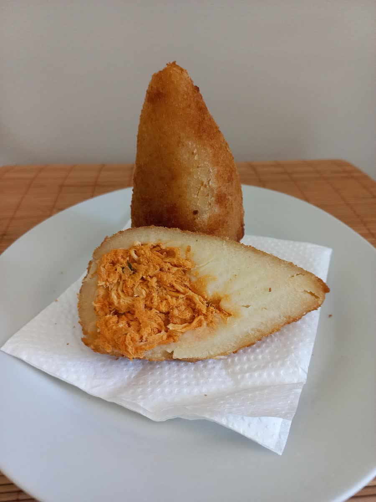
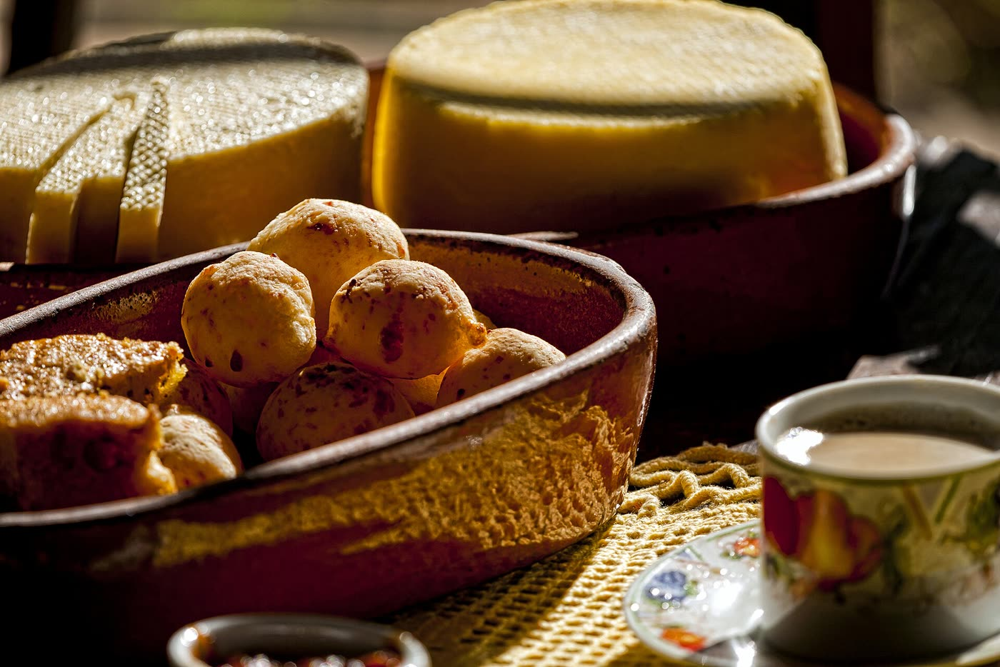
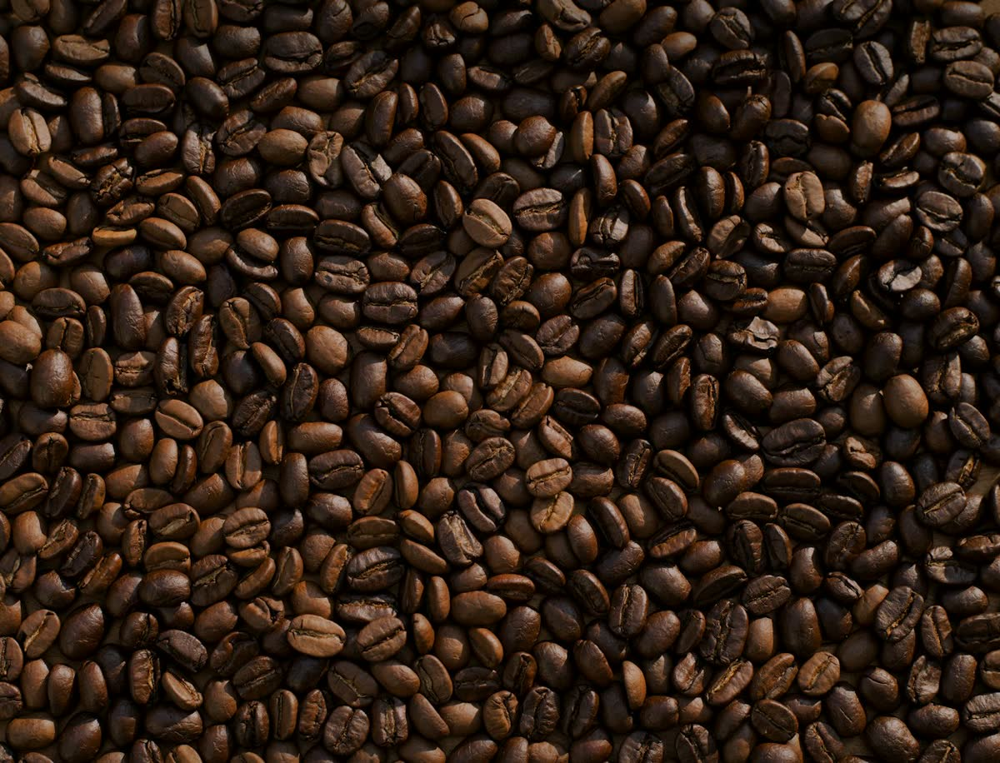

Salgado
Coxinha
Chicken croquette, also offered stuffed with catupiry. Mini orders show up beside the full-size ones.
See hours

Altamonte Springs
Brazilian bakery, café, and market on State Road 436. Cheese bread, salgados, coffee, and a shelf of products from home.
The online menu lists mini salgados for catering in trays of 50 and 100. Mix pão de queijo, coxinha, kibe, and cheese puffs, then call the counter to lock the order.
No tray prices are printed here. They live on the ordering page and at the counter.

The café shares the room with a Brazilian market. Public listings file the place as a bakery, cafeteria, and grocery, and guests describe shopping on the way to the counter.
Listed the same way on public business profiles. Worth a call if you are driving in.